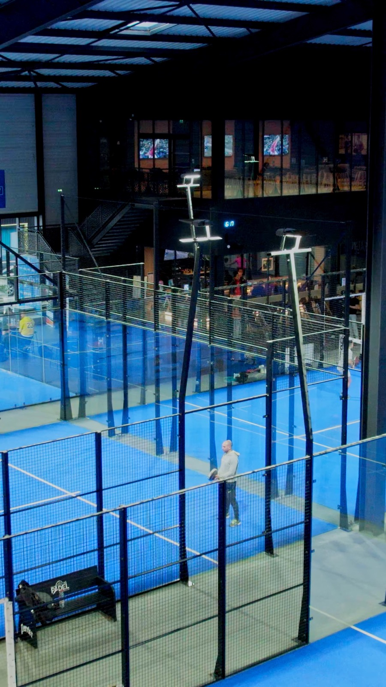
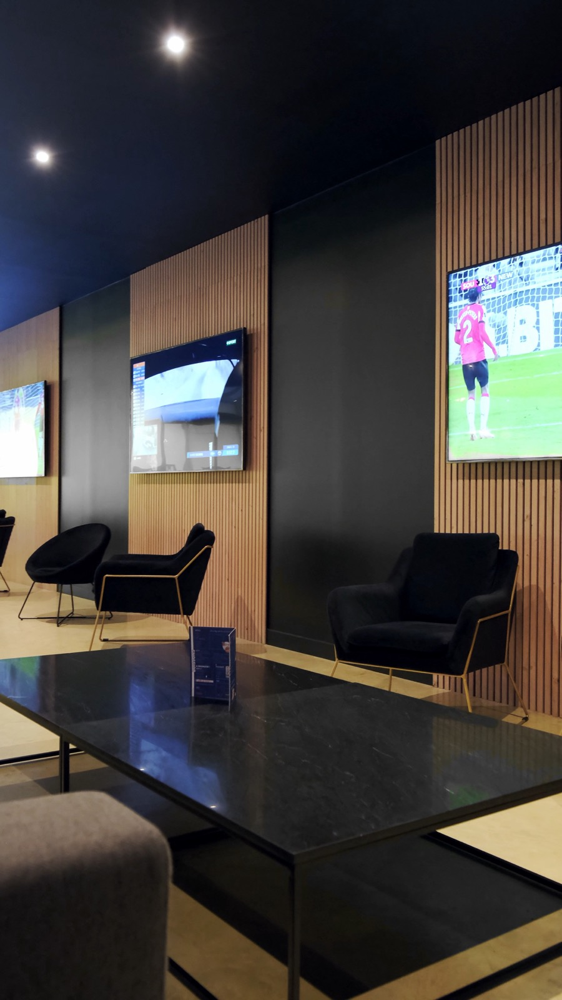
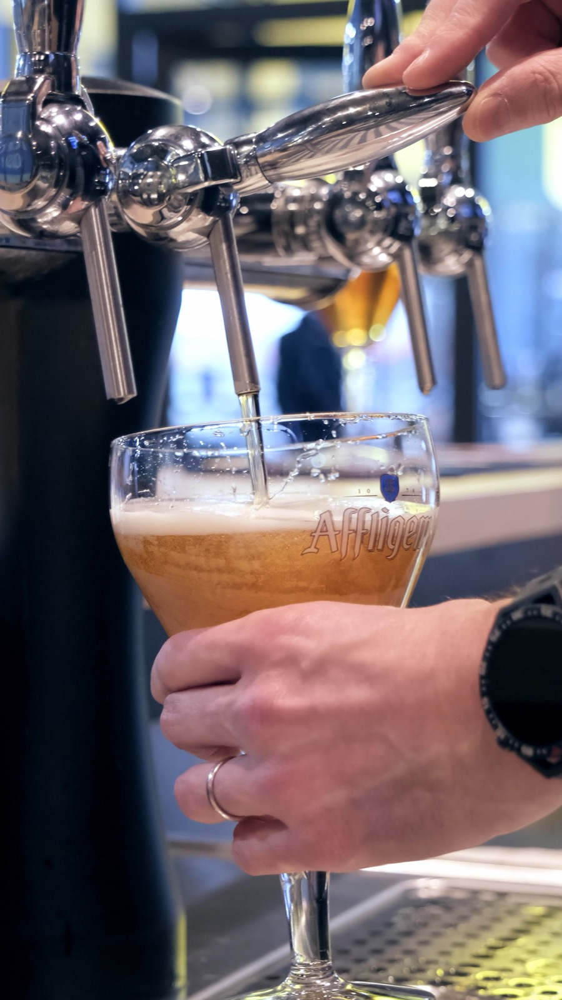
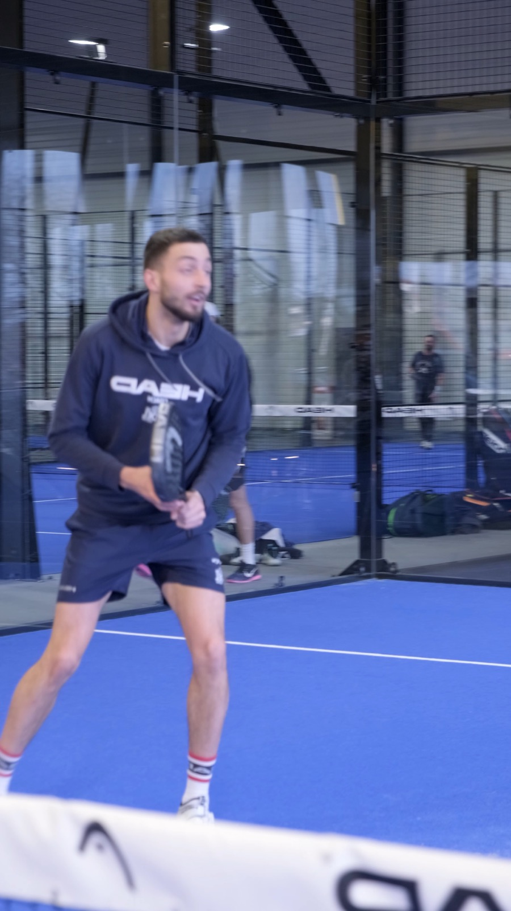
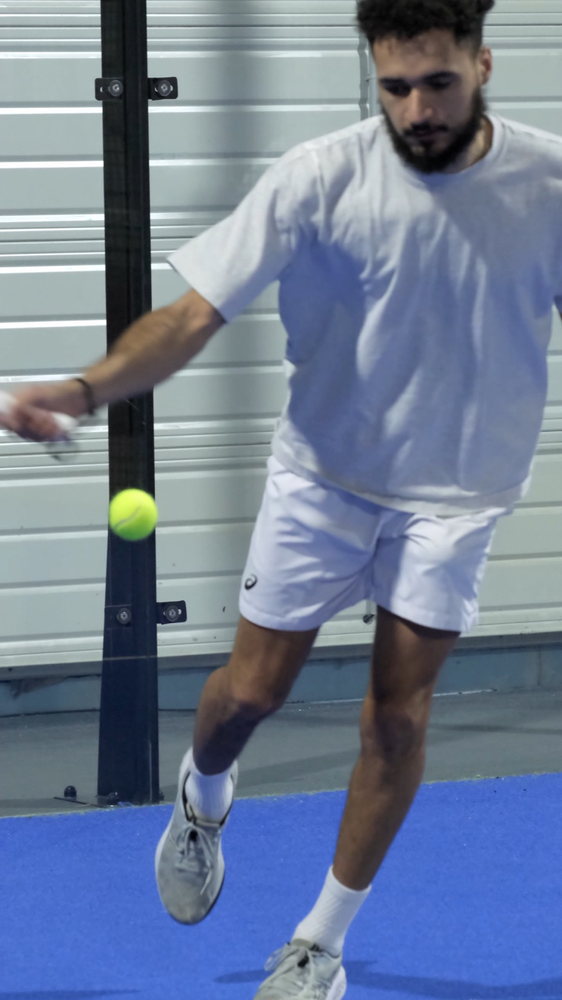

Film de marque · Padel 95 Pontoise
Présentation du complexe Padel 95 : promouvoir le club sur les réseaux et sur écran géant en entrée
Un film de présentation immersif conçu à la fois pour les réseaux sociaux et pour tourner en boucle sur un immense panneau vidéo à l'entrée du complexe.
- Client
- Padel 95 Pontoise
- Secteur
- Complexe sportif & loisirs indoor
- Livrables
- Film de présentation 4K vertical (écran géant LED d'accueil & réseaux sociaux)
- Année · Durée
- 2025 · Livraison selon les deadlines client
Résultats obtenus
- 100%diffusion continue sur l'écran géant d'entrée
- +35%de réservations de terrains via les réseaux
- 4K LEDrendu calibré grand format & mobile
- 360°terrains, coaching & club-house valorisés
01 — Contexte
Le contexte & les enjeux
Ce complexe de Padel souhaitait une vidéo de présentation complète de ses installations. L'objectif était double : promouvoir le club et l'expérience joueur sur les réseaux sociaux pour attirer de nouveaux pratiquants, mais aussi et surtout diffuser le film en boucle sur un immense panneau vidéo vertical installé dès l'entrée du complexe.
02 — Attentes
Ce que le client attendait
- Créer un film spectaculaire capable d'habiller en continu l'immense panneau vidéo à l'entrée du complexe
- Décliner et utiliser ce même contenu pour promouvoir le club sur les réseaux sociaux (Instagram, TikTok, Facebook)
- Montrer l'ensemble de l'expérience : qualité des pistes indoor, intensité du jeu, accompagnement par les coachs et convivialité du club-house / bar
- Fonctionner parfaitement avec le son sur les réseaux sociaux, comme sans le son en affichage dynamique dans le hall d'accueil
03 — Contraintes
Les contraintes du projet
- Exigence de netteté et de contraste en 4K verticale pour un affichage sur panneau LED géant sans aucune perte de qualité
- Éclairage mixte complexe entre les projecteurs zénithaux des terrains bleus et l'ambiance feutrée du salon lounge
- Capter la vitesse de jeu et les échanges de padel tout en conservant une image fluide et lisible de loin
- Concevoir un montage qui se prête à une lecture en boucle continue (loop) à l'accueil du club
04 — Propositions
Les pistes que nous avons proposées
-
Une visite guidée descriptive avec voix off
Un tour du propriétaire commenté : pertinent sur le web, mais inutilisable en boucle sans le son sur le panneau vidéo d'entrée.
-
Un clip 100 % sportif centré uniquement sur les matchs
Montrer uniquement des échanges sur le terrain, au risque d'occulter l'espace détente, le bar et la convivialité qui font la force du complexe.
-
Une immersion complète : du terrain au club-house Piste retenue
Un film visuel ultra-rythmé, pensé en 4K verticale native, qui alterne vues architecturales des terrains, coaching, points spectaculaires et moments de détente au lounge.
05 — Solution
La solution retenue
Nous avons retenu l'immersion complète : un film 100 % visuel et rythmé qui capte immédiatement le regard des visiteurs dès leur arrivée devant le panneau vidéo géant, tout en performant sur les réseaux sociaux. Le parcours montre la hauteur sous plafond des pistes, l'énergie des joueurs et des coachs, ainsi que l'espace lounge et bar pour l'après-match.
06 — Production
Tournage & montage
Tournage
Captation en 4K verticale à haute cadence (slow-motion sur les frappes et échanges), plans d'ensemble en hauteur et mise en valeur du club-house avec caméras et optiques professionnelles.
Montage
Montage dynamique pensé pour tourner en boucle fluide sur écran géant LED comme en format Reels, étalonnage contrasté sublimant le bleu des pistes et la chaleur du lounge.
Équipe
Réalisateur-cadreur et monteur-étalonneur dédiés.
07 — Résultat
Le résultat






Sur l'écran géant de l'entrée, la vidéo fait son effet dès que les joueurs franchissent la porte, et elle nous apporte régulièrement de nouvelles réservations via Instagram.

Et si le prochain cas client, c'était le vôtre ?
Parlez-nous de vos enjeux. Nous revenons vers vous avec des idées concrètes, pas avec un devis générique.